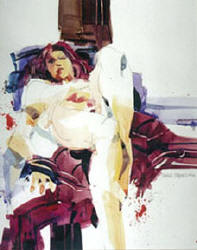

TOM
WILLIAMS
The Artist's Responsibility to Society
WHEN THE FANS VOTED
five of my songs on the Hottest 100 Hits of the year, I wasnít
surprised. My third album, Every Inch I Got, was still on the
charts and the title cut and ìYou Canít Tell Me Noî were both top ten
all through December. Plus, Iíve always had at least three Hottest 100
Hits before. What was different was that those times I had to tape PSAís
about drinking and driving and high blood pressure. Five Hottest 100
Hits meant I had to do an interview for The Fresh! Networkís End of the
Year Special. All because Iím a minority artist. White artists with five
hits didnít have to do interviews. They could tape PSAís or appear on
the special. I couldíve gotten angry, but my agent, Larry, said the
entertainment industry had made the deal a long time ago. They wanted to
be sure artists gave back to the community, especially us minority
artists. Larry also reminded how loyal my fans were. Theyíd be happy to
see me on the End of the Year Special. And he was right. If I needed to
give more, I would. Know what Iím saying? I owed it to the fans. Theyíd
made me a rich man. And like Larry said, a rich man who just happened to
be black.
So I got the questions a week before the interview. But
there was a problem. Iím not stupid. I just donít read newspapers or
magazines unless my photoís on the cover. I donít watch TV news, either.
Too negative, like Larry says. Still, I knew we were at war. I knew the
president wasnít popular with everyone. I knew people didnít have jobs
and were hungry. A big river flooded in the summer, I remembered that.
And thereíd been those fires on the west coast (far north of my Laurel
Canyon property, thank the Lord). That one girl who was kidnapped, she
was missing a long time.
After I read
all the questions, though, I called Larry, and his staff got busy.
ìItíll be fun, like a college cram session,î Larry said. Iíll have to
take his word on that. When I turned eighteen, I was already working on
Gifted, my second album. Iím sure everyone remembers it.
But I learned a lot in the conference room at Larryís
office, even though the iced tea was served with lemon instead of lime
and the catered lunch had more carbs than my nutritionist Sandy
recommends. After all the grub, Larryís staffers gave me flash cards. On
the front of each was another famous personís name or an event. On the
back were facts and details I could use to form my own personal opinion.
As an artist, I donít have the most organized mind. Iím always thinking
about more than one thing at once. Plus, Iím not a computer. I feel.
And emotions arenít easy to communicate. Just look at the sad songs from
Every Inch I Got, ìTook Away My Candyî and ìBooty No More.î
After weíd gone through all fifty cards three times, I felt
ready. Everyone patted me on the back when I said the president and vice
presidentís names without looking at the cards. I felt good, like I do
when I sing the chorus of my other hit, ìKing Me.î ìBow down to me
baby/Do just what I say./You might be the Queen,/But youíre gonna king
me today.î I reminded Larry about the tea again. He said not to worry. I
called my bodyguards to come and escort me to the limo, but Larry said,
ìAlmost forgot.î He took out a piece of paper and wrote on it. The paper
wasnít the same size and color as the rest of the cards, but that was
okay for now. Larry handed me the paper and said, ìLycopene. This is a
real lulu for men. African American men, especially.î
ìSandy was telling me about it,î I said. ìItís in tomatoes,
right?î
Larry nodded. Heís Jewish, I think. He has one of those
noses at least, and he was making it go up and down pretty fast. He
said, ìSo donít forget. Mention it when they ask you about what you see
as big trends for next year.î
ìCool,î I said, then called Tombstone and T-Rex to come take
me to the stretch. I donít get driven around in an Escalade or Hum-Vee,
like a lot of artists today. I prefer something with a little more
class.
On the interview day,
I flew to New York with Tombstone, T-Rex, and Larry in the record
companyís jet. A limo driver named Troy picked us up. I always try to
learn their names. Makes them feel like I really care. But on the way to
the studio I was hungry. I only had time to eat a light breakfast.
Strawberries and kiwi, organic granola, three strips of Fakiní, this
smooth soy substitute for bacon that goes really well with scrambled egg
whites. But I didnít complain. I wanted to do my part and get this
taping over with.
I napped on the drive until we came to a sudden stop. I
looked up but couldnít see anything through my shades and the limoís
tinted glass. I yawned and asked Larry if we were at the studio. He said
we were near it but there was a problem. T-Rex and Tombstone reached
toward their shoulder holsters. I told them to be cool, then asked Troy
the driver what was going on. ìProtesters, sir,î he said. ìThey always
show up around this time of year.î
About the same time, I heard chanting. I couldnít hear what
the people were saying, but a good rhythm was beneath it. I wanted to
see just who was out there and started to buzz down the window. Troy the
driver said, ìThatíll just anger them more. Especially if they get a
look at you.î
ìWhy me?î I said. After all my tours and personal
appearances, I was cool with crowds but never ran into any angry ones. I
didnít know if I should be scared or not. I scrunched down in my seat.
My foot stopped tapping.
ìNot to worry,î Larry said. ìWeíre in good hands.î
I looked at T-Rex and Tombstone. They nodded. Troy the
driver busted out this speedy reverse maneuver. ìWeíre all right now,
sir,î he said. ìThey donít know about the back way.î
ìGreat,î I said and sat up. I was still hungry but also
wanted to see these protesters, find out what they were protesting. I
said, ìWhy would they block the limo?î
Larry shook his head. Tombstone and T-Rex pulled their hands
away from their gats. ìNot to worry,î Larry said again.
Soon we were out of the limo and in a freight elevator with
some security guards. It was my first time inside one and I donít
recommend it. Too bouncy. Inside the studio, a production aide escorted
us to the greenroom. On a table there was freshly cut fruit and some
bagels, along with freshly-squeezed and de-pulped orange and grapefruit
juice. I started munching. Then this rapper Kan-Deed entered the
greenroom. I was happy to see I wouldnít be the only minority artist on
the show, even though I couldnít remember which five of his raps made
the Hottest 100 Hits. ìAll Yíall Bitches,î his single from the Back
to the Hood soundtrack, had been Number One in the spring. The title
cut of 21st Century Nigga 4 U charted, and so did ìGot
Wutz Minesî and ì2 B.î There had to be a fifth but I didnít ask. Didnít
want to seem like a snob, know what Iím saying? Then, over the speakers
came the Xmas song I released last year, ìWhat Santa Donít Know (Is How
Naughty You are with Me),î and I remembered Kan-Deedís duet with
Nefretiti Moore, ìUp Your Chimney.î It was warming many hearts for the
holiday season.
Kan-Deed and
I shook hands and hugged, while our bodyguards did the same. Kan-Deedís
agent wasnít in the greenroom, but all of us grooved with ìWhat Santa
Donít Knowî and ìUp Your Chimneyî when it came on right afterward. Even
Larry tried to put his butt into motion. I finished half a bagel, some
papaya, pineapple, and mango, then drank some juice and listened to
Kan-Deed talk about combining cardio with weight-training. Just then,
his agent came in and shook hands with Larry, then me, then Tombstone
and T-Rex. He put his arm around Kan-Deed about the same time Larry
walked next to me. Both agents said, ìGot your cards?î
When I pulled
mine out of my FUBU jacket pocket and Kan-Deed got his from his leather
overalls, we looked at each other and laughed. ìBe glad to get this over
with,î Kan-Deed said. ìI donít like doing nothing where I donít gets
paid.î
I agreed. But
I said, ìIt is the artistís responsibility to society to give back, even
when you get nothing in return.î
ìYou right,î
Kan-Deed said, flipping his thick thumb over the cards. I could see many
had the same words as mine. Recycling was one. I was in favor of it and
hoped all people would do what they could to help out the community and
the future generations. The door opened again and a production aide in
headphones looked in. He wore a turquoise shirt I wanted, and I asked
him if it was Hugo Boss. After he said it was, I nodded to Larry for him
to write that down. An agent should be able to know exactly what youíre
thinking at all times. The PA asked Kan-Deed and me if we were okay
appearing together instead of on our own. I didnít mind and neither did
Kan-Deed, but I was watching Larry while the PA left. He hadnít written
anything down yet, and I was about to tell him to when Kan-Deed said,
ìYíall see them freaks outside?î
ìFreaks?î I said.
ìRight near the front
doí,î he said, tucking his cards back in the front pocket of his
creaking overalls.
ìOh them,î I said.
ìLookeded
like Night of the Living Dead or some shit,î he said. His
bodyguards laughed, and so did mine. I laughed too even though I wasnít
sure what he was talking about. Later, I heard it was a black and white
movie. I only watch black and white movies if theyíre real important,
like Schindlerís List. Itís so long, though. Iíve never stayed
awake through the whole thing.
After I
stopped laughing, I turned to Larry. ìWhy were they out there?î
Larry adjusted his hairpiece and tugged at his watch. Then
he shook his head and waved his hands. ìJust a bunch of angry writers
and artists,î he said.
ìPeople who
wish they were as popular as you, dog,î Kan-Deedís agent said. Larry
never called me dog. I wondered why. Plus, I still wanted to know what
those protesters could have against us. Especially if they were writers
and artists. Werenít we all trying to give something to society? I said
this aloud and Kan-Deed looked at me, then his agent. Larry said, ìNot
these kind of artists. Theyíre selfish. They think because people donít
buy their stuff that that makes them special.î
ìBut . . .î
Kan-Deed and I said together, looking at our agents, who were both
wearing gold chains on their right wrists.
ìNot to
worry,î both agents said for about the twentieth time. Then Larry said,
ìBesides, youíve got other things to think about now.î
The PA in the
shirt I wanted returned and said it was time for make up. Walking out of
the greenroom, I worried that things werenít working the way they should.
I said, ìThis is the taping, right? Itís not live, is it?î
ìNo, no,î the
PA said. Larry was right behind me, his hand squeezing my shoulder.
Kan-Deed looked nervous, too. He rubbed the dollar sign on his necklace
like it would bring him good luck. The PA said, ìWe learned our lesson a
few years back. You should have heard some of the crap. . . î He paused,
then walked ahead. ìCrappy sound quality when it goes out live
sometimes.î
Now I felt
better. I touched my cards in my pocket. Lycopene, Recycling, the
President, the high cost of gas. I was ready to share my personal
opinion on all these things.
Inside the studio, I
saw Missy Q, one of the Fresh! Networkís hosts. A make up artist was
rouging her face and Missy Q looked pretty with her extensions, halter
top, black tights and K-Swisses. She looked smaller than when I saw her
on TV. Kan-Deed didnít notice when he bent down to hug her. Larry says I
have an eye for these little details in life. Thatís what makes me the
artist I am, he says.
After she
hugged me, Missy Q pointed toward a piano with a bench. Kan-Deed and I
sat down. The lights made the room hot and my face felt stiff under the
makeup, but it was very quiet as all the sound crew arranged the mics
and the cameramen took their places. Then I heard noise that sounded far
away. I turned to a window and swore I heard the rhythm Iíd heard in the
limo. I shook my head and looked at Kan-Deedís forearm. He had a new
tattoo of a pit bull humping a womanís leg. Underneath, it said, ìThe
One You Wití.î
ìHow
about those loudmouths on the street?î Missy Q said. She shook her head
and wiped her forehead. ìWhat a bunch of nuts. You guys ready to tape?î
Kan-Deed
said, ìLetís do it.î
I nodded.
The first question was about the president. I said I
believed he was a good man and that even if I didnít agree with
everything he said or did, I still thought he wanted the best for
everybody. Why else would he be president? Kan-Deed agreed but said
since heíd met the man at a special dinner last April, he was certain
things were going to get better, especially for the black community. I
felt jealous that Kan-Deed mentioned the black community first. Plus,
heíd met the president. I looked at Larry and nodded, but he didnít
write anything down. He kept whispering to Kan-Deedís agent. I reminded
myself to demand he get me a special dinner with the president.
Soon. Then Missy Q asked about the Middle-East and I said, ìI hope they
all know about the healing power of love, which is what I wrote my song
ëEvery Inch I Gotí about.î Missy Q said, ìBut arenít most of your songs
banned from airplay there?î
I stammered, shuffled my Stacey Adamses on the floor. Missy
Q said, ìThatís ok. We can always edit.î
Kan-Deed must have had
better cards. He had a lot more to say to every question Missy asked.
When he said the Good Lord had blessed him with a mind to rhyme and a
body that was kickin, I sunk my fingernails into both of my palms. It
would look like I was copying Kan-Deed if I mentioned my blessings from
the Man Upstairs. I wished I had demanded my own segment when the PA
asked. Then I thought how Kan-Deed really only had four-and-a-half-hits,
since one was a duet. I thought about my next album, which I was already
working on. Now I just had to make sure I had enough hits to be here for
next yearís interview. I wasnít going to do any more PSAís, that was for
sure. I know people turn them off right away, even when someone as
famous as me is doing them.
All this
thinking got me more distracted. I noticed a mole on Missy Qís ankle and
that the PA in turquoise had big sweat stains under his arms. This is
the down side of my attention to details. Larry and Kan-Deedís agent
kept leaving the taping area and returning. I wondered if I needed a new
agent. Kan-Deedís pit bull tattoo kept making me smile, too, because
whenever he flexed his forearms, it looked like the pit bull was bucking
his hips. And I kept looking toward that back window, sure I could hear
that chant. My foot was tapping its rhythm again, even when I answered
Missy Qís questions.
Then Missy Q asked us both if there was anything we wanted
to share about the upcoming year. I didnít want to look at my cards
again. I worried the camera would pick that up and that shot might make
me look stupid. Thatís the trouble when you donít have full creative
control over a project. But then I remembered lycopene and said it
aloud. ìReally?î Missy Q said. ìWhat about lycopene?î
ìWell, itís a very important nutrient,î I said. ìYou find it
in tomatoes.î
ìReally,î Missy Q said, her nose scrunched up like it had
been all the time for Kan-Deed when she looked interested in what he was
saying. Then Kan-Deed said, ìBut you got to cook the tomatoes for
maximum benefit, you know. Saute ëem or make a sauce. Itís especially
good for the brothers, who need to be serious about they prostate
health.î
I didnít know who I was most upset with then. Kan-Deed for
jumping up in my business, Missy Q for not quieting him down, or Larry
for not preparing me better. I thought I would ask Kan-Deed how things
were working out with his agent. But then I definitely heard the chant,
only this time, it sounded as loud as a backing choir. Someone knocked
hard on the door to the studio. Missy Q, Kan-Deed and I all looked at
one another, then the door. It opened. All we could see was the blue
backs of security guards. T-Rex and Tombstone sprinted toward the door
with Kan-Deedís bodyguards, and they waved for us to get down on the
floor. Thatís when I could hear finally hear what the protesters were
saying. ìThe truth, the truth, the people need the truth.î I was on my
hands and knees now, but wanted to get closer. I wanted to know why
these protesters were so angry. All four bodyguards jammed outside. But
then a skinny person dressed in black crawled inside. After she sprang
up, she slammed shut the door and locked it, looking at us all with a
pale face and a sneer that made me believe she wanted to hurt someone.
Two soundmen left their posts to try to tackle her. She was
too quick. That sneer was still on her face when she found a camera and
saw its red light glowing. She stopped and said, ìSometimes it is
brutal, sometimes it is ugly, but art that speaks the truth is far more
necessary than pap this network is responsible for.î At least thatís
what I think she said. I was busy looking at her sneer, which wasnít a
sneer at all but the crooked shape of her mouth. I felt bad for her,
because she was sort of pretty. Except for that mouth, her shiny
forehead and greasy hair. A good stylist could have helped. Maybe a
plastic surgeon. She started to chant, ìThe truth, the truth, the people
need the truth,î but Larry grabbed her from behind and clamped his
handkerchief over her messed up mouth. I almost said something then,
since I was sure that was one of the handkerchiefs my shopper had bought
for Larryís birthday. Instead I pushed myself up off the floor. The girl
kicked but Larry must have been doing the upper arms weight training Iíd
been recommending. The PA in turquoise opened the door. Larry took her
outside. Tombstone must have flashed his nine mil to the protesters
because they didnít seem as loud. Still, in my head their chant was
clear as day.
So hereís why I wound up happy Iíd had to wake up early,
skimp breakfast and fly across the country for this interview I was only
a few minutes away from hating. Like I said, the chant was in my head,
just not the words. The rhythm was still there. I snapped my fingers,
the way I do when I think Iíve got a beat I can work with. I stomped my
feet, and started humming ìOoh, ooh, da-da-da-da-da Oooh.î Kan-Deed
picked up on it and started beat-boxing and smacking his pecs and quads.
I waved at one of the cameramen, and he pointed his toward me. Then I
opened the piano and struck a C, but it was just a prop and out of tune.
Still, I thought the Fresh! Network would want me to fake it for now.
Later on we could overdub.
Even though my fingers didnít really touch the keys, I found
the melody to balance the rhythm. With Kan-Deedís body percussion and
beat box, I felt I had some words. I was thinking about everybody then,
Missy Q, Kan-Deed, the bodyguards, agents and the crew. I was thinking
about the protesters, too, and how they wanted the truth. Mostly, I was
thinking about the girl and her crooked mouth. She touched me. I wanted
to give her something in return, words of love and joy and sharing what
you have with another. ìOomph, oomph,î I sang, ìMy baby got that oomph.
Oomph, oomph, my baby got that oomph.î By the time Larry, T-Rex and
Tombstone returned, I had this chorus, an entire verse and a chord
progression, too. I sang, ìOomph, oomph, my baby got that oomph,î and
Larry said, ìThatís fabulous, G. A hit for sure.î
ìWait a minute,î Missy Q said, breathing hard. I wondered
how many times sheíd seen a song get written like that. ìWhat in the
world is oomph?î
I started to answer but Kan-Deed shaped a curvy behind then
grabbed the air with both hands and started humping like the pit bull on
his arm. ìThatís some nice oomph,î he said, pumping his hips.
I nodded, but Missy Q looked confused. ìWhich is it?î she
said. ìIs it the butt or the motion?î
ìBoth,î Kan-Deed and I said together. Then I said, ìArt can
mean more than one thing. I let the audience decide.î I snapped my
fingers at Larry, who got a pen and paper from his briefcase so I could
write down the lyrics and the chords. He had them to me before I could
blink. I decided I didnít need a new agent anymore. ìAnyway,î I said,
and snapped my fingers again to be sure that the camera was on me. ìIím
glad the Man Upstairs brought all of us together so we could make this
beautiful music so near the end of the old year and the beginning of the
new one.î I walked away from the piano with the lyrics in my hand. I
needed to be in my studio to finish ìOomph.î I waved to Kan-Deed, who
showed Missy two definitions of oomph, getting very close to her
backside with his crotch. T-Rex and Tombstone opened the door, then
escorted Larry and me outside. Larry said, ìYou going to be back here
next year?î
ìPardon?î I said.
ìYouíve already got one song,î Larry said. ìAll you needís
four more.î
ìIt doesnít work that way,î I said. The elevatoróthe regular
elevatoróopened, and T-Rex and Tombstone led us inside. I wanted to say
more to Larry, but he wouldnít know what I was talking about. Kan-Deed
might know, and some of the protesters would too. Artists donít just
turn it on and off like a spout. To create, we had to be inspired. We
had to feel. Yet I knew, going down in the elevator, that next
year I would be back. So many people needed what I had to give.
|

Dana
by Richard Stephens |
 ‚Üê Back to MarckBeggs.com | Arkansas Literary Forum archive, preserved as originally published
‚Üê Back to MarckBeggs.com | Arkansas Literary Forum archive, preserved as originally published{kind=link}